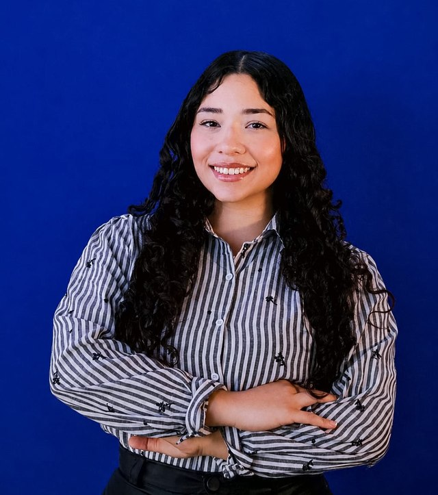

Graduanda em Engenharia de Software (UCB), construindo arquiteturas estáveis e explorando Ciência de Dados aplicada.

Estou no 6º semestre de Engenharia de Software na Universidade Católica de Brasília, com formação técnica em Informática e base prática em desenvolvimento web. Meu maior interesse é arquitetura de sistemas — projetar soluções que continuam de pé mesmo quando algo falha — e venho ampliando esse interesse para Ciência de Dados e Machine Learning, com estudos aplicados em Scikit-learn, PyTorch e FastAPI. Também tenho experiência em suporte técnico e trabalho com metodologias ágeis (Scrum).
Implementação em Python de uma arquitetura tolerante a falhas para o sistema MCAS, acompanhada de uma simulação interativa que analisa o comportamento do sistema sob falha — com foco em redundância de sensores e padrões de projeto usados em sistemas de missão crítica.
Sistema para venda de ingressos de show de ópera, aplicando boas práticas de orientação a objetos com os padrões GRASP (Controller, Information Expert, Creator).
→ ver repositórioCalculadora financeira inspirada na HP 12C, executada via terminal, com avaliação de expressões numéricas usando estrutura de dados em pilha.
→ ver repositórioProtótipo acadêmico para auxiliar pessoas a reduzir ou interromper o consumo de cigarros, com orientações e acompanhamento de progresso diário.
→ ver repositório6º semestre em andamento. Conclusão prevista para dezembro de 2027.
Suporte técnico a usuários, manutenção de hardware, configuração de redes locais e otimização de processos de tratamento de arquivos digitais.
Aprendizado supervisionado com Scikit-learn, manipulação de dados categóricos em Python, introdução ao FastAPI, modelos Transformer com PyTorch e introdução a tensores.
Programação na Prática, Desenvolvimento Colaborativo no GitHub, Fundamentos do Scrum, AWS Cloud Foundations e Suporte Técnico em TI.